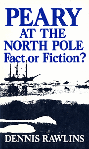

| |
|
|
|
|
|
|
 |
A select, annotated bibliography of books related to the Polar Controversy
The following bibliography by no means represents every book touching upon The Polar Controversy. It is limited to those that the majority of the text is about that subject, is related to it in some important way, or was written by an eyewitness to part of the disputed polar expeditions of Cook or Peary. The bibliography is arranged by the year of publication. Of course the periodical literature on the dispute is vast and important to come to an understanding of it, but is not included here.
1908
Cook, Frederick A., To the Top of the Continent, New York: Doubleday, Page.
Cook’s account of his two Alaskan expeditions 1903-1906. Contains the evidence on which his claim to have been the first to climb Mount McKinley is condemned, largely his falsely captioned and faked pictures and drawings representing the 1906 "climb."
1910
Peary, Robert E., The North Pole, New York: Frederick A. Stokes.
Peary’s ghosted account of his discovery of the North Pole. For an analysis of this book and how it was written see the introduction to the edition published by Cooper Square Press, 2001.
1911
Anonymous ("An Englishman in the Street," aka Henry W. Lewin) Did Peary Reach the Pole? London: privately published.
The very first publication to openly doubt Peary reached the North Pole. First published anonymously, but included in Lewin’s 1935 book; see below.
Borup, George. A Tenderfoot with Peary, New York, Frederick A. Stokes.
A gee-whiz account dripping with college slang by the youngest member of Peary’s team. The text was sanitized by Peary’s lawyer; even so, it contains some evidence that conflicts with Peary’s official story.
Cook, Frederick A., My Attainment of the Pole, New York: Polar Publishing Co.
Cook’s partially ghosted account of his expedition to the Pole. For an analysis of this book and the important differences introduced into the subsequent editions, see below at 1913.
Whitney, Harry Payne, Hunting with the Eskimos, New York: Century Co.
An account by one of Peary’s paying passengers on his last expedition, who stayed the winter of 1908-09 in Dr. Cook’s box house and witnessed his return from his northern journey in the spring of 1909.
1912
Henson, Matthew A., A Negro Explorer at the North Pole, New York: Frederick A. Stokes.
Henson’s story, whose true authorship is unclear. For an analysis of this book and how it came to be written, see the introduction to the edition published by Cooper Square Press, 2001.
Cook, Frederick A., My Attainment of the Pole, New York: Mitchell Kennerley.
Second edition, which makes some significant changes to Cook’s fatally flawed solar observations, and a few other changes to the text.
1913
Balch, Edwin S., The North Pole and Bradley Land, Philadelphia: Campion.
An early attempt by a learned geographic dilettante to argue in favor of Cook’s claim by comparative analysis. The arguments largely hang on the assumed existence of Cook’s "Bradley Land" to prove Cook’s claim to have reached the North Pole. Bradley Land does not exist.
Browne, Belmore, The Conquest of Mount McKinley, New York: Putnam.
The account of the 1910 and 1912 Parker-Brown Expeditions, the first of which identified the place where Dr. Cook took his fake "summit" photo—19 miles from the summit and 15,000 feet lower. The second recounts the near-ascent of Mount McKinley in 1912. It is believed that the party reached a level 464 feet below the actual summit before being driven back by a storm.
Cook, Frederick A., My Attainment of the Pole, New York: Mitchell Kennerley.
Third edition, with further changes and additional material designed to bolster Cook’s case. For an analysis of this text and the changes between editions, see the introduction to the edition published by Cooper Square Press, 2001.
1914
Balch, Edwin S., Mt. McKinley and Mountain Climbers’ Proofs, Philadelphia, Campion.
A sequel to his earlier book (1913) seeking to prove by similar means that Cook climbed Mount McKinley. Its arguments largely center on showing that Cook’s "summit" picture is genuine. It has been conclusively proven that the picture is a fake.
Franke, Rudolph, Erlebinsse eines Deutschen im hohen Norden, Hamburg: Alfred Janssen.
The account of Cook’s only white companion on his 1907-09 expedition. Although Franke only accompanied Cook partway across Ellesmere Island before he was sent back, he nevertheless gives some crucial conflicting testimony that bears heavily on the veracity of Cook’s account. In German.
Rost, Ernest C., Mt. McKinley, Its Bearing on the Polar Controversy, Washington, D.C.: Milans & Sons.
A booklet published by Cook’s paid lobbyist in support of Cook’s Mount McKinley Climb. Again it aims at proving Cook’s "summit" picture is genuine and that Belmore Browne’s similar photograph of "The Fake Peak," the place he alleged was the actual location of the photo was, itself, a fake. They have been proven to be one and the same.
Stuck, Hudson. The Ascent of Denali, New York: Scribners.
An account of the first complete ascent of Mount McKinley. It contains the reasons why Stuck believed Cook had not made the climb based on the observations of the first man to indisputably stand at the summit.
1915
Johnson, William N., Did Commander Peary "Achieve" the North Pole? Chicago: Dvorak & Webster.
An early booklet attempting to cast doubt on Peary’s claim using published sources.
1917
Hall, Thomas A. Has the North Pole Been Discovered? Boston: Badger.
Distributed by the author to libraries, this brilliant but cantankerous analysis of the discrepancies of Peary’s claim had wide influence in later decades. Unfortunately, it failed to examine Cook’s claim with the same rigor, though it allowed for the possibility that he did not reach the Pole.
1920
Hall, Thomas A. Has the North Pole Been Discovered? Volume II, Omaha, privately printed.
A slim booklet update to the previous work mainly attacking the arguments of V. Stefansson that his discovery of Meighen Island proved Cook did not reach the Pole, and the testimony of Cook’s Inuit companions gathered by Donald MacMillan on his 1914-1917 expedition. Not nearly as well argued as the original.
1928
Bartlett, Robert A., The Log of "Bob" Bartlett, New York, G.P. Putnam’s Sons.
Bartlett’s only account of the 1909 Expedition. Partisan, and filled with curious errors.
1929
Hayes, J. Gordon., Robert Edwin Peary, New York: MacMillan.
An examination of Peary’s entire exploratory career and claims largely influenced by Hall (1917). The first to conclude that Peary’s 1906 claim to a new farthest north was also false.
1934
Hayes, J. Gordon. Conquest of the North Pole, London: Thornton Butterworth.
Despite the title, Hayes devotes only a few pages to the Polar Controversy. He does update his assessment of Cook to one more favorable after making direct contact with Hall, but still concludes he probably did not reach the Pole.
MacMillan, Donald B., How Peary Reached the Pole, Boston: Houghton-Mifflin.
MacMillan’s apologia for Peary, that doesn’t answer the question posed by the title. His only published account of the 1909 expedition.
1935
Lewin W. Henry, The Great North Pole Fraud, London: C.W. Daniel Co.
Another debunking of Peary based on Hall. It even contains a lengthy article on the murder of Ross Marvin, Peary’s chief assistant in 1909, written by Hall himself. Reprints Lewin’s first book on Peary (1911).
1951
Cook, Frederick A., Return from the Pole, New York: Pelligrini & Cuddahy.
Cook’s manuscript written in the 1930s, edited by Frederick J. Pohl. Eloquent writing at times, but the story it embodies of Cook’s "Stone Age" winter spent with his two Inuit companions in 1908-09 is demonstrably untrue.
1960
Weems, John Edward, Race for the Pole, Boston: Houghton-Mifflin.
The first attempt to retell in detail the events of the Polar Controversy. Weems accepts the conventional view at the time that Peary discovered the Pole and Cook was an obvious fraud.
1961
Freeman, Andrew A., The Case for Doctor Cook, New York: Coward-McCann, 1961.
The first biography of Frederick A. Cook, and a good antidote to Weems (1960). Begun in the 1930s and based on solid research including a number of interviews with Cook, the original, much longer, book was suppressed by the prospective publisher. This shortened version is anti-Peary, but not overtly pro-Cook. Limited in what it reports, but still a basically sound book factually. It established Cook as an interesting historical figure.
1967
Weems, John Edward, Peary: The Explorer and the Man, Boston: Houghton-Mifflin.
This groundbreaking biography of Peary, the first to be based on his extensive personal papers, is ambiguous in its outlook. Although largely sympathetic to Peary, the book is surprisingly candid, and as far as it goes, factually sound. A real achievement.
1970
Wright, Theon, The Big Nail, New York: Stein and Day.
Derivative and sloppily documented study of the Polar Controversy, owing much to Weems (1967) and Freeman (1961). Fairly neutral, though favoring Cook.
1973
Eames, Hugh, Winner Lose All: Dr. Cook and the Theft of the North Pole, Boston: Little Brown.
Scantily researched and speculative biography of Cook, which is highly reliant on Freeman (1961). Openly pro-Cook, but first to abandon the idea that Cook’s "summit" photograph of Mount McKinley was genuine.
Rawlins, Dennis, Peary at the Pole, Fact or Fiction? Washington, D.C.: H.B. Luce.
Presents Peary’s North Pole claim as a case study in science fraud. Although indebted to Hall (1917), it adds scientific analysis and the interesting findings of Henshaw Ward to the evidence against Peary. It dismisses Cook out of hand. Still the most valuable title on the technical aspects of the Polar Controversy.
1982
Hunt, Richard, To Stand at the Pole: The Story of the Cook-Peary Feud, New York: Stein and Day.
Ambivalent examination of the claims of Cook and Peary, leaning toward Peary and against Cook. Some insights, but largely unfocused. Indebted to predecessors on the same ground, with very little added to the puzzle.
1983
Goodsell, John. On Polar Trails, Eakins, TX: University of Texas Press.
Long-belated publication of Peary’s surgeon’s massive account of the 1908 expedition in a radically condensed and edited form. Peary blocked publication during his lifetime because he had used substantial portions of Goodsell’s diary in his own The North Pole. Original manuscript is in the Mercer County, PA library. Some very interesting insights into the events surrounding Peary’s return from his northern journey in 1909. Caution is in order, however, as the editor admits to tampering with the original text to make it more "readable."
1989
Herbert, Wally, The Noose of Laurels, New York: Athenium.
The distinguished polar explorer’s reluctant debunking of Peary’s polar claim. Some important new revelations from Peary’s papers, but highly dependent on Weems (1967) and Freeman (1961) for most of the text. Obliquely discounts Cook as a serious contender, but does not analyze his claim in any detail.
Davies, Thomas D., Robert E. Peary at the North Pole, Rockville: Md.: The Foundation for the Promotion of the Art of Navigation.
Study commissioned by the National Geographic Foundation to answer The Noose of Laurels. Posturing as a scientific study, it is filled with lacunae and proves nothing but the ends that Peary partisans would go to preserve his claims. Interesting, however, in that context, and surely one of the more blatant attempts to manipulate public opinion on the subject in recent years. A slim supplement was published in 1990 with interesting new photographic evidence discovered by Ted Heckathorn.
1991
Abrams, Howard, Hero in Disgrace: The True Story of Dr. Frederick A. Cook, the true discoverer of the North Pole. New York: Paragon.
Almost exclusively derived from previous writers’ efforts, but based largely on Freeman (1961). Little original research, except for documentation regarding Cook’s Texas prosecution, which is, in at least one instance, misrepresented in Cook’s favor. Little more than hack writing, and one suspects, motivated by the author’s vendetta with the National Geographic Society.
1996
William E. Molett, Robert Peary & Matthew Henson at the North Pole, Frankfort, KY: Elkhorn Press.
Vanity press attempt to justify Peary’s navigation to the Pole without using longitudinal readings. Takes to task the Davies report above, but advocates an alternative method of steering for Peary that is neither supported in his writings or known to have been advanced before Hinks published it in 1910, a year after Peary’s return from his supposed conquest of the North Pole using this system. Poorly written.
1997
Bryce, Robert M., Cook and Peary: The Polar Controversy, Resolved, Mechanicsburg, PA.
Massive study of the entire Polar Controversy and thorough biography of Dr. Cook, the first to use Cook’s personal papers. Largely based on primary sources with many major discoveries, including Edward Barrill’s 1906 Diary, a print of Cook’s original "summit photo," which proves it a fake, and a copy of Cook’s original Polar Diary that indicates Cook fell short of the Pole by more than 400 miles. Adds many interesting documents from the Peary papers not previously known, including a vast amount of detail of the inner workings of the campaign by Peary backers to discredit Cook. Also examines larger implications of the Polar Controversy as a case study in the creation of history and truth. It takes the position that neither Cook nor Peary reached the Pole, and that each was a knowing fraud. Essential reading.
2001
Washburn, Bradford and Cherici, Peter, The Dishonorable Dr. Cook: Debunking the Notorious Mount McKinley Hoax. Seattle: The Mountaineers Books.
A study of Cook’s career with a focus on his claim to have climbed McKinley in 1906. Hugely derivative of Bryce (1997). Contains synopsis of Washburn’s pioneering analysis of the fraudulent nature of Cooks’ published photographs in To the Top of the Continent, but some unaccountable elementary errors, mostly in the picture captions, undermine its credibility. After the book was published Bryce brought a complaint of copyright infringement against the publisher. Under the agreement that settled the complaint, in addition to other considerations, The Mountaineers Books placed a notice in every remaining book in their inventory acknowledging the authors’ reliance on Bryce’s book without proper credit and citation.
2005
Henderson, Bruce, True North: Peary, Cook and the Race to the Pole. New York: W.W. Norton.
The same arguments advanced by Frederick Cook in 1911 to support his claim to have beaten Peary to the North Pole. It also repeats the substance of Freeman's book (1961), often in a nearly word-for-word paraphrase to make substantially the same points made by him nearly 50 years ago. No use is made of Cook's persoanl papes except for his so-called memoirs. Because they are factually corrupt, they only introduce many false memories into a narrative that copies many statements from previous secondary authors that have since been proved to be incorrect. Sources are cited as if they were actually examined, when all but a small fraction have been lifted directly from previously published secondary accounts. some of the citations are even copied incorrectly from these accounts, making them pure fabrications. Inaccurate, out of date, and uninformed, True North adds no new facts or evidence of any significance to the subject.
| «- My Attainment of the Pole: An analysis | Cook's tour of the Arctic -» |